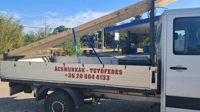
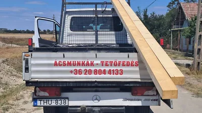
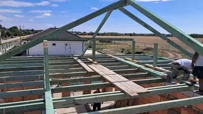
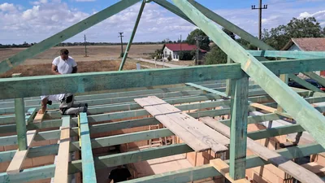
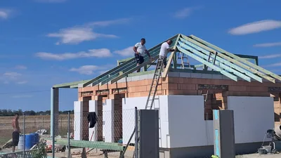
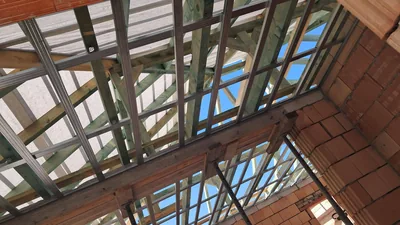
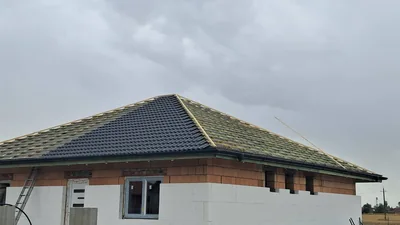
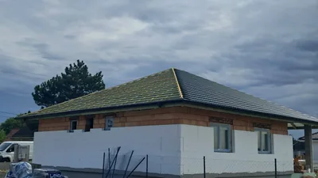

Projekt 01 · Ácsmunkák és tetőfedés
Családi ház tetőépítése
Családi ház tetőépítése a faanyag helyszínre érkezésétől a tetőváz összeállításán és a lécezésen át a cserépfedésig.


01Faanyag szállítása

02Faanyag a helyszínen

03A szerkezet összeállítása

04Gerendák és kapcsolatok

05Szarufák szerelése 06A tetőváz külső nézete
06A tetőváz külső nézete

07Belső szerkezeti részlet 08Fóliázás és lécezés
08Fóliázás és lécezés

09Az első fedett tetősíkok 10Cserepezés munka közben
10Cserepezés munka közben

11Tetőfedés oldalnézetből 12A fedett tetősík
12A fedett tetősíkA KÖVETKEZŐ LÉPÉS
Van egy terve?
Adjunk neki formát.
Írja meg a helyszínt és az elképzelését.
A részleteket személyesen egyeztetjük.